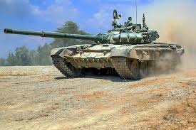
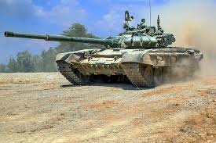

Галерея
Тут ви можете переглянути зображення танків.
Танки вперше з'явилися під час Першої світової війни. Вони були розроблені для подолання окопів і інших перешкод. З тих пір танки стали невід'ємною частиною сучасної армії.
Сучасні танки оснащені різноманітними технологіями, такими як активний захист, електронні системи управління вогнем та новітні броньові матеріали.
Тут ви можете переглянути зображення танків.
